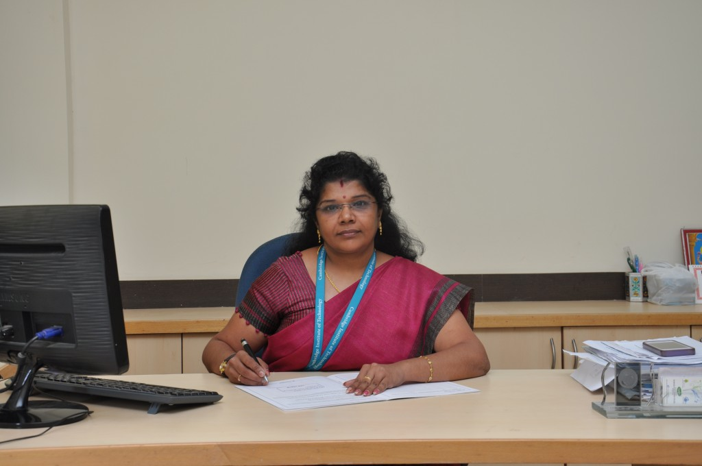

The Department of Basic Sciences is pivotal for engineering education. Students learn the basics of science and engineering which are essential for further studies. The department was started from the inception of the college. Its objective is to provide value-based education to the budding engineers. The department has well qualified, experienced and dedicated faculty, who are blend of knowledge and experience. The department comprises of three branches of study namely Physics, Chemistry, and Mathematics. All these three disciplines exist as separate divisions and maintain individual identity.
The unique strength of the department is the excellent coordination in carrying out the academic responsibilities.The department grew with the progress of the institution; presently it consists of 20 faculties out of which 6 are doctorates. The strong basic foundation laid by the department helps the students to apply knowledge & to become a successful engineer.The department encourages the faculty members to attend workshops, conferences, seminars to update their knowledge.
The department motivates the faculty to publish papers in reputed journals, submit project proposal to funding agencies& to enroll for PhD program.Our faculty’s research expertise includes all frontier areas in Physics, Chemistry and Mathematics. Majority of the faculty members are actively involved in research and development activities.
Dr Shanthi S R
M.Sc, Mphil, PhD
Professor & Dean, Basic Sciences
Click here for more information